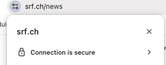
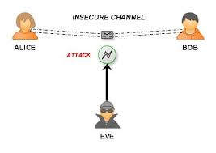

16 Deffie-Hellman
Deffie-Hellman
Sichere Website-Verbindungend
Wenn Sie die Verbindung zum Webserver öffnen, so handeln der Webserver und Ihr Browser automatisch einen Schlüssel für die sichere Verbindung aus.
Sie sehen das in der Adresszeile des Browsers.

Wozu Deffie-Hellman dient.
Nehmen wir an, Alice und Bob möchten geheime Nachrichten austauschen.
Doch da ist auch noch Eve, die alle Nachrichten mitlesen kann.

Alice und Bob müssen als Ihre Nachrichten verschlüsseln, damit Eve den Inhalt der Nachrichten nicht verstehen kann.
Doch wie vereinbaren Alice und Bob einen gemeinsamen Schlüssel, ohne dass Eve diesen Schlüssel mitbekommt?
Hier kommt das Deffie-Hellman Verfahren ins Spiel.
Das Grundprinzip von Deffie-Hellman
Der Diffie-Hellman-Schlüsselaustausch oder Diffie-Hellman-Merkle-Schlüsselaustausch (auch kurz DHM-Schlüsselaustausch oder DHM-Protokoll[1], ursprünglich ax1x2) ist ein Schlüsselaustauschprotokoll. Dieses ermöglicht, dass zwei Kommunikationspartner über eine öffentliche, abhörbare Leitung einen gemeinsamen geheimen Schlüssel in Form einer Zahl vereinbaren können, den nur diese kennen und ein potenzieller Lauscher nicht berechnen kann. Der dadurch vereinbarte Schlüssel kann anschließend für ein symmetrisches Krypto System verwendet werden Diffie-Hellman baut dabei auf die Exponentialfunkton in Kombination mit Modulo auf. Computer können mit diese Formel y sehr schnell berechnen
Verstehen Sie nur Bahnhof?
Aufgabe Filme zu Deffie-Hellman
Schauen Sie sich diesen Film aufmerksam an.
https://www.youtube.com/watch?v=3QnD2c4Xovk
oder Stichwort: short version Deffie-Hellman key exchangeNotieren Sie welche Schritte Alice und Bob mit den Farben machen.
Erklären Sie danach Ihrem Lernpartner das Verfahren mit den Farben aus dem Film.
Das Mathematische Verfahren von Deffie-Hellman
Diffie-Hellman baut auf die Exponentialfunkton in Kombination mit Modulo auf.
Computer können anhand der Formel y sehr schnell berechnen.
y = b^x mod mDer Ablauf Schritt um Schritt:
- Schritt: Alice und Bob vereinbaren Werte für b und m.
- b=7 und m=17.
- b ist eine sogenannte Basiszahl.
- m ist eine sogenannte Modulo Zahl.
- Beide Zahlen müssen Primzahlen sein.
- Eve hört mit und kennt diese Zahlen auch.
- b=7 und m=17.
- Schritt: Alice und Bob vereinbaren Werte für b und m.
- Alice bestimmt eine weitere beliebige Zahl
- AliceSecretKey = 34
- Alice berechnet nun mit der Formel y = b^x mod m ihren öffentlichen Schlüssel
- y = 7^34 mod 17 = 15
- Alice sendet diesen öffentlichen Schlüssel (15) an Bob.
- Eve hört mit und kennt diesen Schlüssel 15 auch.
- Alice bestimmt eine weitere beliebige Zahl
- Bob bestimmt auch eine weitere eigene Zahl, behält die aber für sich.
- BobSecretKey = 19
- Bob berechnet nun mit der Formel y = b^x mod m seinen öffentlichen Schlüssel
- y = 7^19 mod 17 = 3
- Bob sendet diesen öffentlichen Schlüssel (3) an Alice.
- Eve hört mit und kennt diesen Schlüssel 3 auch.
- Bob bestimmt auch eine weitere eigene Zahl, behält die aber für sich.
- Alice berechnet nun mit dem öffentlichen Schlüssel von Bob und ihrem geheimen Schlüssel den gemeinsamen geheimen Schlüssel.
- GemeinsamerSchlüssel = BobPublicKey^AliceSecretKey mod m
- GemeinsamerSchlüssel = 3^34 mod 17 = 9
- Da Eve den AliceSecretKey nicht kennt, kann sie den GemeinsamerSchlüssel nicht berechnen.
- Alice berechnet nun mit dem öffentlichen Schlüssel von Bob und ihrem geheimen Schlüssel den gemeinsamen geheimen Schlüssel.
- Bob berechnet nun mit dem öffentlichen Schlüssel von Alice und seinem geheimen Schlüssel den gemeinsamen geheimen Schlüssel.
- GemeinsamerSchlüssel = AlicePublicKey^BobSecretKey mod m
- GemeinsamerSchlüssel = 15^19 mod 17 = 9
- Da Eve den BobSecretKey nicht kennt, kann sie den GemeinsamerSchlüssel nicht berechnen.
- Bob berechnet nun mit dem öffentlichen Schlüssel von Alice und seinem geheimen Schlüssel den gemeinsamen geheimen Schlüssel.
- Alice und Bob haben nun den gleichen gemeinsamen geheimen Schlüssel (9).
Doch Eve kennt diesen Schlüssel nicht.
- Alice und Bob haben nun den gleichen gemeinsamen geheimen Schlüssel (9).
Dies funktioniert deshalb, da mathematisch bewiesen werden kann dass:
- 7 Basiszahl
- 17 abgemachte Modulozahl
- 34 Alice secret key
- 15 Alice public key
- 19 Bob secret key
- 3 Bob public key
- 9 gemeinsamer geheimer Schlüssel
Basizahl^AliceSecretKey mod Modulozahl = AlicePublicKey
7^34 mod 17 = 15Basizahl^BobSecretKey mod Modulozahl = BobPublicKey
7^19 mod 17 = 3AlicePublicKey^BobScretKey mod Modulozahl = geheimer Key
15^19 mod 17 = 9
Nun kombiniere ich die Schritte A) und C) für den Beweis:
(7^34) ^19 mod 17 = 9
7^(34*19) mod 17 = 9BobPublicKey^AliceScretKey mod Modulozahl = geheimer Key
3^34 mod 17 = 9
Nun kombiniere ich die Schritte B) und D) für den Beweis:
(7^19) ^34 mod 17 = 9
7^(19*34) mod 17 = 9
Es ist das Gleiche:
7^(34* 19) mod 17 = 9 = 7^(19*34) mod 17